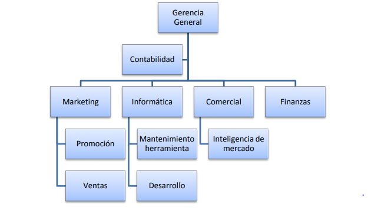
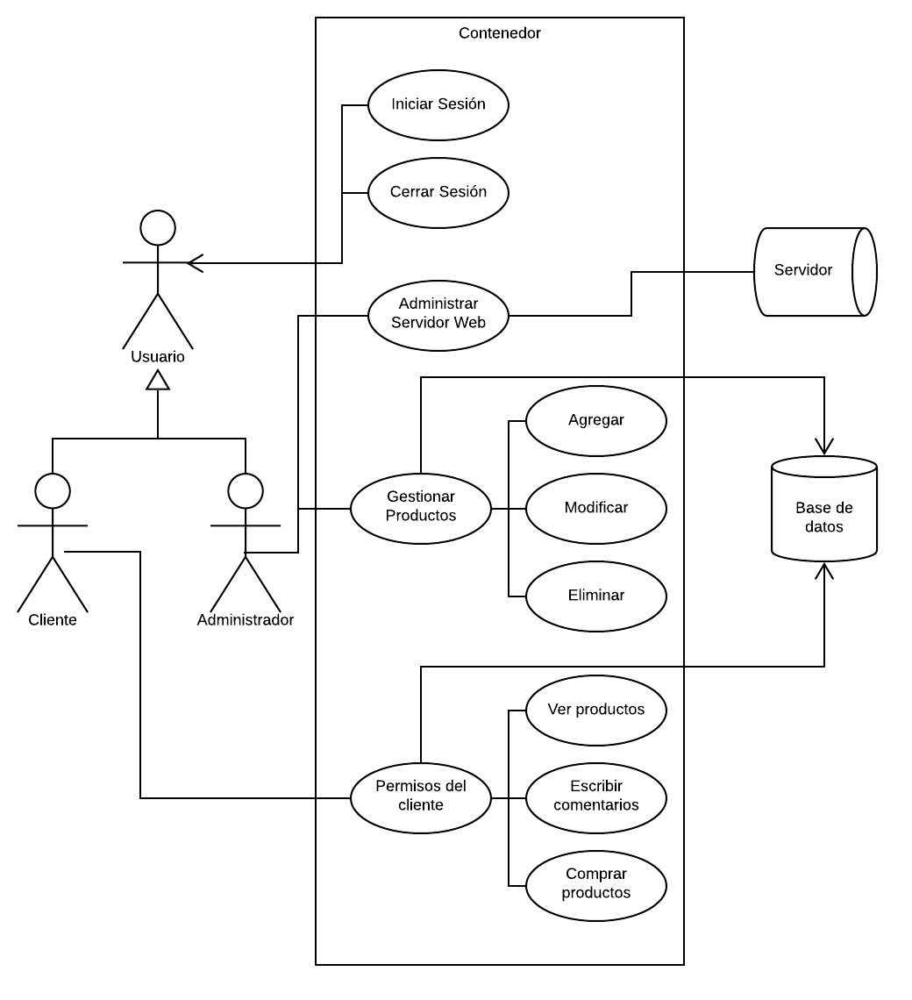
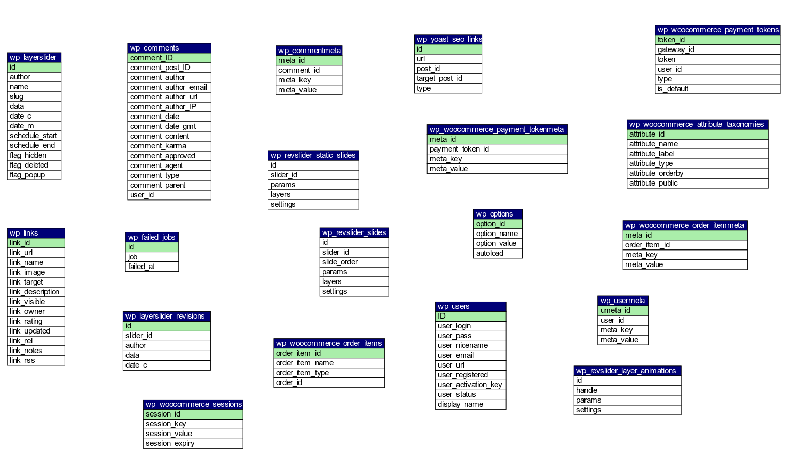

Circuit City
Tienda de electrónicos virtual
- 9 de Abril del 2019
- Por: Ana Karen Molina Pastrana
- Página Web: http://amestris.me/wp/
Dentro de la siguiente página se puede encontrar todos los detalles acerca del desarrollo de la página web Circuit City desarrollada en la plataforma de Wordpress con apoyo de Woocommerce para Negocios Electrónicos, dentro del menú lateral puede encontrar una lista de apartados de navegación para moverse al tópico que se requiera, como lo son el plan de negocios, manual de usuario además del manual de instalación que será de gran apoyo para nuevos usuarios que requieran utilizar la plataforma e ventas en página web.
Manual de Instalación
1. Descargar e Instalar Wordpress
Antes de realizar la instalación de la página, se requiere descargar la plataforma Wordpress, una vez que ya está instalado se requiere ingresar al panel principal para poder instalar un nuevo tema. Clic aquí para descargar Wordpress
2. Crear Base de Datos
Primero se entra a phpMyAdmin para crear la nueva base de datos.
Además de descargar Wordpress se tiene que crear una base de datos que será utilizada para almacenar los datos de la página web en nuestro servidor, dicha base de datos lleva por nombre wordpress y se muestra a continuación.
3. Subir Tema Por FTP al Servidor
Para subir el tema por FTP, necesita descomprimir y copiar todos los archivos de good-food en la carpeta wp-content/themes/good-food. También puede realizarlo por un git clone directo en la carpeta antes mencionada del Git: https://github.com/karenmolinap/good-food.git
En este caso se utilizará Git Clone para bajar los archivos directo en la carpeta mediante la consola de Digital Ocean como se muestra a continuación.
Después de eso, el tema estará disponible en el area de Temas de Wordpress para su activación.
Configurar Woocommerce
Una vez que haya activado el complemento WooCommerce, continúe con Woocommerce - Configuración - Productos - Pantalla y desplácese hacia abajo hasta la configuración de la imagen. Si desea que sus imágenes de Woocommerce se vean en nuestra vista previa de demostración, configure los siguientes parámetros como se muestra a continuación:


Woocommerce es un complemento gratuito, por lo que puede actualizarlo fácilmente si lo necesita en la sección de Complementos de su Panel de WordPress. Además, todas las preguntas relacionadas con el uso de la funcionalidad de Woocommerce se tratan en Documentación de Woocommerce , que es muy detallada.
DOCUMENTACIÓN DE WOOCOMMERCE
Manual de Uso
Ahora una vez que han sido instalados los componentes puede dar inicio al uso de la plataforma, a continuación se detallarán las páginas funcionales para navegar por la tienda en línea.
1. Página Principal
En la siguiente captura se muestra la página principal, que se compone por ciertos menús superiores y una presentación principal sobre la publicidad.
Al dar clic en el botón Acerca de Nosotros se puede navegar a esta página donde podrá documentarse acerca del uso e instalación de la plataforma.

En el apartado Categorías encontrará una lista de categorías de productos en línea para realizar sus compras de diversos tipos de productos a variados precios.
Para realizar una búsqueda general en la tienda se puede apoyar de la herramienta de lupa para buscar en toda la tienda, basta con dar clic en el icono de la parte superior derecha para abrir una ventanilla que le permitirá escribir datos sobre su búsqueda.
Una vez que se escribieron los términos de búsqueda se da Enter para acceder a la página y que busque las coincidencias encontradas, en la siguiente captura se muestran los resultados obtenidos.
2. Categorías
En el apartado Categorías encontrará una lista de categorías de productos en línea para realizar sus compras de diversos tipos de productos a variados precios, en este caso daremos clic en Categorías > Celulares para explicar el comportamiento de la página al hacer clic en un apartado.
3. Detalles de Producto
Al dar clic sobre el nombre de un producto lo dirigirá directamente a su página de detalles, donde se presentan los aspectos más importantes del producto como su precio y demás imagenes de muestra. En la siguiente captura se muestra esta ventana.
4. Compra de Producto
Si se desea comprar un producto se presiona el botón de Add to Cart > View Cart donde lo llevará a lá página de sumarización de precios y venta como se muestra a continuación.
5. Finalización de la Compra
Una vez que se está conforme con los datos del carrito puede dar clic al botón "Proceed to Checkout" para finalizar su compra. En esa ventana llenará los datos correspondientes a su nombre y dirección además de fijar otros datos importantes, finalmente aparecerá un recuadro para finalizar la compra con una cuenta de paypal como se muestra a continuación
Plan de Negocios
1. ASPECTOS GENERALES DE LA EMPRESA O EL PROYECTO
a) Nombre de la empresa o proyecto / pre-folio del proyecto
Circuit City
b) Nombre del emprendedor (representante)
Ana Karen Molina Pastrana
c) Nombre del asesor o asesores
Mario Humberto Rodríguez
d) Nombre de la universidad
Universidad Politécnica de Victoria
e) Objetivos
Objetivos Generales:
- Crear un ambiente de compra cómodo para nuevos y viejos usuarios de la plataforma.
- Modificar el entorno de compra-venta para las pequeñas empresas en el área de comercio electrónico.
- Mejorar el desempeño de las tecnologías web en la actualidad con la ayuda de software genérico.
Objetivo Específico:
Ser una página web intuitiva, visualmente cómoda, amable para el usuario que le permita tener una buena experiencia de compra de productos en línea utilizando la plataforma de Wordpress en conjunto con Woocommerce para mejorar el entorno de la transacción.
f) Antecedentes de la empresa
No podemos saber cuál es la fecha de creación del comercio dentro de la historia de la humanidad. Pero sabemos que esta actividad nació de una necesidad de los hombres para ser autosuficientes. El intercambio de bienes y servicios es un primer indicio de la evolución, sin este intercambio no se podría asegurar la subsistencia ni el desarrollo de los seres humanos. La historia del comercio ha ido evolucionando, a veces de una forma pausada y lenta y en algunas ocasiones con pasos agigantados. Lo que entendemos ahora como comercio electrónico es la última fase a la cual hemos llegado de este progresivo desarrollo. Desde luego, no hemos alcanzado ni mucho menos la cumbre más alta de esta evolución, en el futuro llegarán muchas más novedades que harán más efectivo, eficiente y rápido el intercambio de bienes y servicios entre humanos.
2. DESCRIPCIÓN DEL ENTORNO
a) Variables
Dentro de las variables que inciden dentro del marco general para el desarrollo del proyecto se pueden encontrar las sociales, en este mundo existen todo tipo de usuarios y compradores con gustos diversos sobre sus compras en línea. En el ámbito político, se tiene que cuidar que todos los productos sigan la ley de acuerdo a los impuestos generados por las compras y el IVA, dentro de las variables ambientales se encuentran el ahorro de energías y reciduos al hacer las compras por internet mientras que las culturales recide en la variedad de productos y categorías que son reflejadas en la página principal del proyecto.
b) Situación del sector económico
Un aspecto importante del comercio electrónico es que uno siempre debe recordar que no todos los visitantes que vienen a su tienda saben exactamente lo que quieren. Tal vez solo quieran navegar por diferentes productos y ver qué productos les gustan más o saber qué producto están buscando o no están seguros de la marca. Por lo tanto, la recomendación del producto se puede utilizar para inclinar la balanza a su favor. Los beneficios son múltiples y el uso efectivo de las recomendaciones de productos puede ayudarlo a convertir el 49% de sus clientes.
Como vendedor, siempre es importante escuchar los comentarios de sus clientes para que pueda refinar sus futuros esfuerzos de marketing. Observe atentamente las tendencias de compra. La venta cruzada y la recomendación del producto son muy efectivas si se hacen correctamente. La recomendación del producto puede resultar en más visitas repetidas al sitio con mensajes de marketing oportunos. ¿Crees que las recomendaciones de productos y las ventas cruzadas son fáciles de "conectar y usar"? Bueno, necesitas pensar de nuevo. La carne del asunto radica en ejecutar bien tus estrategias.
3. ANÁLISIS DEL PRODUCTO Y SU MERCADO
a) Producto o servicio
La plataforma que se describirá a continuación es una plataforma en línea que ofrece productos sobre computación, de los cuales destacan programación web y minería de datos, CircuitCity es una página donde se pueden encontrar diversos productos para reforzar el aprendizaje acerca de las tecnologías de la información, se eligió esta temática de estudio debido a la experiencia del desarrollador de contenidos con las TICs (Tecnologías de la Información), por lo que era una opción buena sin riesgos de falta de información o conocimientos sobre el área abarcada en cada lección.
La plataforma de CircuitCity, está dividida en productos, de los cuales cada curso se divide a su vez en lecciones independientes, la división de estos productos se pensó de forma que fuera más amable con el cliente y lo ayudara a dividir los conocimientos requeridos para cada sección de la página.
Hablando de la elección de los productos que se encuentran en la plataforma fueron elegidos en base a la dificultad y el conocimiento requerido para el aprendizaje del receptor de los productos, debido a que no es posible generar productos independientes sin que posean una conexión entre sí, al estar conectados, permite que se pueda tener un mejor manejo sobre las habilidades que obtiene el alumno, estos análisis pueden apoyar como futura referencia acerca de que áreas son las que necesitan un refuerzo, utilizando como medida las actividades y tareas externas a las lecciones. Dentro de la plataforma también se puede comunicar con el maestro a cargo de los productos, lo que permite que se forme una comunicación más amplia y permite que el usuario pueda generar un ambiente de estudio cómodo, donde puede preguntar y exponer sus ideas acerca del curso.
b) Fortalezas y ventajas
Fortalezas
- Se tiene una infraestructura de aprendizaje en línea con bases sólidas.
- El aprendizaje electrónico es una forma más flexible de brindar capacitación, especialmente si se consideran los patrones de cambio en las nuevas tecnologías.
- Existe mayor cercanía de comunicación entre el cliente y el maestro.
- Posee desarrollador interno de contenido, lo que permite la actualización constante de los productos.
- Se posee experiencia en las áreas presentadas en cada curso, lo que añade valor a cada lección existente en la plataforma.
Ventajas
- Desarrollar un sistema actualizado, que cubra las expectativas de los nuevos estudiantes.
- Involucrar a expertos en la materia dentro de del desarrollo de nuevos productos que luego pueden usar el aprendizaje como solución combinada a sus proyectos activos.
- Aumentar los productos existentes con nuevos temas de interés para profesores y alumnos.
- Mejor informe para las partes interesadas, recibir retroalimentación de los usuarios.
- Vincular las actividades realizadas en las lecciones con competencias de conocimiento predefinidas.
- Mejorar la comunicación con el usuario para generar un ambiente de estudio positivo y confiable.
c) Mercado potencial
Pese al esfuerzo de las empresas locales por ampliar su presencia en el comercio electrónico local, la mayoría de las compras siguen siendo realizadas a comercios internacionales. Estados Unidos se ha mantenido a través de los años como el principal lugar de origen de los artículos importados adquiridos por los compradores en internet. Sin embargo, un crecimiento significativo en las ventas ha experimentado el continente asiático, sobre todo en lo que a productos tecnológicos se refiere. Una mayor oferta de marcas y modelos así como productos con precios mucho más bajos son dos de las razones principales por las que los compradores mexicanos prefieren los artículos en línea procedentes del exterior.
Sin lugar a dudas, los artículos deportivos han sido los preferidos por los usuarios del comercio electrónico en México. La compra de ropa y accesorios para hacer deporte han sido los más demandados por los consumidores, marcando un crecimiento constante en los últimos años. En segundo lugar, le siguen las descargas de libros y música en formato digital así como los boletos para conciertos y eventos en general. El promedio de gasto mensual en estas categorías ha sido de 2,178 pesos, un 17% más con respecto al año anterior.
d) Competitividad
La competencia actual es muy grande, las plataformas que llevan más de 5 años en el mercado han sido consolidadas como la mejores, las que obtienen todos los usuarios y las mejores ganancias, es por ello que este proyecto, es una página más flexible con formas diversas de trabajo y modelo de prueba óptimo, ya que agiliza la forma en que es trabajado el módulo no se limita a las compras cortas de páginas amplias. Lo anterior hace referencia a que se busca impartir los conocimientos con otros sitios web dentro de CircuitCity, sin llenar largos productos que no provoquen el interés del comprador, se busca que puedan comprar de una forma interactiva sin descuidar aspectos como gustos y alcances obtenidos cada vez que pasan por una nueva compra, se verifican las compras realizadas para evaluar cómo será su siguiente compra en la página web.
4. ESTRATEGIA DE MERCADOTECNIA
a) Análisis FODA

b) Política de Producto y/o servicio y atención al cliente.
Si no estás satisfecho con tu producto, permítenos ayudarte con una devolución o remplazo. Tu satisfacción es muy importante para nosotros. Normalmente, los artículos comprados en nuestras tiendas o en Circuit City.com (contenido en inglés) se pueden devolver o cambiar dentro de los noventa (90) días de la compra, con o sin recibo.
Circuit City se reserva el derecho a desaconsejar, limitar o denegar las devoluciones o los intercambios, independientemente de que el cliente tenga o no un recibo. Todas las devoluciones sin recibo están sujetas a un proceso de verificación de reembolso. Todas las decisiones relacionadas con las devoluciones están sujetas a las leyes aplicables. El gerente de la tienda tiene la autoridad de tomar una decisión final sobre todas las devoluciones.
c) Política de Precios
Aceptamos:
- Anuncios del tipo “compre uno, llévese otro gratis” con un precio especificado. Por ejemplo: Compre uno por $2,49, llévese otro gratis (BOGO)
- Los avisos de la competencia que publican un producto específico a un precio específico.
- Precios preferenciales para tarjetas de compras en productos específicos que aparecen en avisos impresos.
- Para productos frescos y de carnes cuando el precio se ofrece en la misma unidad de medida (libras y libras.
- No es necesario que los clientes traigan el anuncio de la competencia para que apliquemos la garantía.
- Los productos comprados deben ser idénticos a los del anuncio (tamaño, cantidad, marca, sabor, color, etc.)
No aceptamos:
- Anuncios en los que no se puede determinar el precio real de los productos.
- Precios anunciados en Internet
- Precios de anuncios con error de imprenta de otros minoristas.
- Precios de "liquidación" o por "cierre de la empresa".
d) Comunicación / Plan de medios
- Dirija el tráfico al pasillo de aseo masculino de Circuit City y aumente el conocimiento del potencial de la categoría de aseo masculino para ayudar a los hombres a ahorrar más y vivir mejor.
- Alentar a los compradores existentes de Circuit City a que siempre compren sus productos de aseo para hombres mientras están en la tienda para comprar otros artículos.
- Mejore la experiencia en la tienda para aquellos que compran productos de aseo para hombres para mejorar la probabilidad de compras repetidas. Eduque a los hombres del milenio sobre los beneficios de comprar productos de aseo para hombres en Circuit City.
- Comunicar la variedad de productos disponibles, especialmente aquellas marcas y productos que los compañeros del milenio masculino aprueban.
- Transmita los beneficios emocionales y racionales que experimentan los hombres milenarios que compran productos de aseo para hombres en Circuit City. Aumente la conciencia del potencial de la categoría de aseo para hombres de Circuit City para ayudar a los hombres a ahorrar más y vivir mejor.
- Comunique que los precios de Circuit City siempre superan los de los competidores y demuestre por qué esto es tan valioso para los hombres del milenio.
5. PLAN DE VENTAS
a) Definir la estrategia de ventas
Hacer del servicio al cliente de calidad un valor esencial en Circuit City. Simplemente asegurarse de que las personas que operan en el soporte sean amables, corteses y serviciales no es suficiente. En cada faceta de las operaciones, se debe considerar los posibles problemas de servicio al cliente que pueden surgir, y cómo manejarlos se falla. Adoptar este enfoque proactivo del servicio al cliente resolverá algunos problemas desde el principio y presentará a Circuit City como más fácil de usar.
Es por ello que el plan de ventas se basa en la creación de un buen plan de relaciones con el cliente que busque apliar el pacto de confianza y seguridad de uso en el área de la compra y venta de productos en línes de esta plataforma.
b) Menciona las condiciones de venta
1.1. El Cliente acepta irrevocablemente las Condiciones Generales de Venta y de Entrega, así como nuestras condiciones particulares, incluso si estas condiciones están en contradicción las condiciones generales y particulares del Cliente.
1.2. Las condiciones generales y particulares del Cliente no vinculan a Circuit City, salvo que Circuit City las haya aceptado expresamente por escrito. La celebración de una compraventa entre Circuit City y el Cliente, sin manifestar su desacuerdo en relación con las condiciones generales o particulares u otras disposiciones establecidas por el Cliente, no implica la conformidad de Circuit City con las mismas.
1.3. Se presumirá que cualquier persona que actúe en nombre del Cliente, ya sea un encargado, un colaborador, etc., es representante del mismo y tiene poderes suficientes para actuar como tal y vincularle.
1.4. Los intermediarios, agentes o técnicos de Circuit City no están autorizados a realizar actos que la vinculen, salvo que sus ofertas estén confirmadas por escrito por Circuit City. Circuit City se reserva el derecho de cancelar los pedidos efectuados sin su confirmación.
c) Estrategia de ventas
Se construyeron tres casos basados en distintas proyecciones de demanda, bajo supuestos „pesimistas‟ y „optimistas‟, variando las velocidades de adopción de clientes y su disponibilidad a pagar. Por otro lado también se consideraron variaciones en el flujo de visitas a la página, lo que repercute en el plan de promoción en Adwords, ya que a menor tasa de visita, se debe recurrir a un mayor esfuerzo en Adwords para palear ese déficit. Ese esfuerzo se traduce en mayores precios por click, y mayores presupuestos para las campañas. Detalle de los flujos de ambos escenarios se encuentran en los anexos. Adicionalmente, se comparó el VAN, para estos escenarios bajo una sensibilización de la tasa de descuento, donde se elevó ésta hasta el 30%, suponiendo un mayor riesgo, debido a la naturaleza de emprendimiento tecnológico del proyecto.
6. PLAN DE OPERACIÓN DEL PROYECTO
a) Procesos de producción
Los principales costos operativos corresponden al arriendo por el uso del hosting, y al dominio de la página web. La tarifa de creación del dominio nacional equivale a $18.900, tarifa con una cobertura de dos años. El hosting tiene un costo anual de $ 50 mil pesos.18 Las tarifas de renovación del dominio deben pagarse una vez vencida la cobertura desde la última vez que se canceló, en este caso, al finalizar el periodo inicial de dos años. A continuación se presenta una tabla con las tarifas de renovación, que dependen de la cantidad de años por las que se renueve. Existe la posibilidad de renovar por dos a diez años. El periodo de renovación escogido para “mirunning” serán los 3 años, para completar así los 5 años de evaluación económica
b) Productos
El primer paso, es construir la base de datos sobre la cual se irán aplicando los filtros y determinando la zapatilla más adecuada. Ésta se construye a partir de la información entregada por las marcas y tiendas que accedan a participar del servicio. La información que deben entregar es una planilla en formato Excel o similar, con las siguientes columnas: el modelo de la zapatilla, la línea a la que pertenece (support, cushion, guidance, etc.), el peso y una descripción, las tiendas dónde ésta es vendida y el precio de venta. A partir de allí se le agregan manualmente las clasificaciones para poder ser filtradas (sexo, superficie más óptima para la que está diseñada, el tipo de pisada) Una vez que la zapatilla esté totalmente clasificada ingresa al sistema. Esta operación es realizada cada vez que se incorpora un nuevo cliente, y se va revisando de manera mensual, por si ha habido cambios en el surtido, y está sujeta a modificaciones que el cliente pueda solicitar.
c) Adquisisión de materias
El historial de navegación de cada usuario es recopilado y almacenado en la base de datos. Las estadísticas que se presentarán en los reportes son extraídas a través de consultas automáticamente, de manera semanal. La elaboración del entregable, es mensual y se realiza con la información recopilada durante las 4 semanas anteriores. El archivo es elaborado en formato PDF.
d) Diferencia del producto
Una vez que se ha implementado la estrategia de marketing, se requiere una evaluación constante para determinar su éxito. Hay una serie de métricas difíciles que las empresas pueden usar para medir si mantienen a sus clientes. Lo más obvio son las ventas repetidas, pero también pueden ver si los clientes están gastando más, abriendo boletines por correo electrónico, refiriendo a la compañía a amigos o siguiéndolos en las redes sociales. Todos estos son indicadores de varios tipos de lealtad del cliente.
e) Reglas de normas mexicanas
Ley Federal de protección al consumidor: Con el objetivo de promover y proteger los derechos y la cultura del consumidor y procurar equidad, certeza y seguridad jurídica en las relaciones entre proveedores y consumidores, esta ley indica que en México será ilícita la publicidad que induzca o pueda inducir a un error o confusión por su inexactitud. En pocas palabras se refiere a que no se permitirán casos de publicidad engañosa.
Ley Federal de Competencia Económica: Prevé como ilícitos los casos en los que se dañe, disminuya, limite o impida el principio de libre competencia; así como en los que la publicidad atente en contra de la dignidad de la persona, de sus valores o de los derechos y garantías constitucionales, específicamente en lo relativo a su integridad física.
Reglamento de la Ley Federal de Salud en Materia de Control Sanitario de la Publicidad: Se encarga de verificar lo referente a la calidad sanitaria, origen, pureza, conservación, propiedades nutritivas y beneficios de empleo de los productos. Así como de cuidar que la información publicada no induzca a errores ni exagere las características o propiedades de los productos o servicios.
7. CAPITAL HUMANO
a) Organización funcional
Como se explicitó en secciones anteriores, este negocio tiene la ventaja de ser relativamente barato en mano de obra y personal. Las labores necesarias para la operación de la empresa pueden ser realizadas íntegramente por dos personas, que en este caso son los creadores de la empresa. Aún así, existe una distinción entre ambos, que se hará más evidente al momento de determinar las labores propias de cada socio. La organización requiere la siguiente estructura:

b) Número de empleados
Ana Karen Molina Pastrana
Actualmente es encargada general de las áreas debido a la falta de recurso humano por parte de la página de ventas en línea.
En un futuro se espera contar con más capital humano que apoye en los procesos de búsqueda y control general de la empresa en el ámbito de la estructura organizacional proporcionada con anterioridad.
c) Políticas y reglas
A continuación se listan las políticas que deben seguir los trabajadores para mantener el orden en el área laboral:
- Calendario laboral.- todas las empresas deberán tener uno en un sitio visible. La falta de este calendario, puede suponer una sanción económica. En el artículo de nuestro Blog calendario laboral: obligatorio para las empresas, explicamos el alcance de su obligatoriedad. Si no disponen de calendario en su empresa, puede solicitarnos uno a través de la página contacta de nuestra web.
- Reconocimiento médico.- Las Empresas deben realizar un reconocimiento médico previo al comienzo de la relación laboral, también deben facilitar un reconocimiento médico anual a sus trabajadores. Este reconocimiento no os exime del cumplimiento de la normativa de prevención de Riesgos Laborales en lo referente a la vigilancia de la Salud Laboral.
- Contratación de trabajadores.- La empresa está obligada a formalizar el alta de los trabajadores en Seguridad Social, con carácter previo al inicio de su relación laboral y a registrar los contratos que se suscriban en los diez días siguientes.
- Abono de salarios.- Los salarios deben ser abonados a los trabajadores al vencimiento del mes en curso por cualquier medio que garantice su cobro. Es obligatorio entregar una copia del recibo de salarios al trabajador que deberá conservar en su poder. No es imprescindible que el trabajador firme el recibí de la nómina que queda en poder de la empresa si ésta puede acreditar su abono.
8. ASPECTOS LEGALES
a) La sociedad
El Cliente deberá asegurarse, siempre que venda a un consumidor productos adquiridos a Circuit City, de que el consumidor recibe información suficiente y adecuada sobre la idoneidad del Producto para su uso habitual y para el propósito que el consumidor persiga con la adquisición del Producto. El Cliente no retirará ni reemplazará el etiquetado, manuales de instrucciones, componentes u otros materiales relativos al producto entregado por Circuit City o el fabricante. El cliente se abstendrá de hacer ninguna manifestación sobre las características del Producto en nombre de Circuit City o del fabricante. El Cliente, en su calidad de vendedor a consumidores, es el único responsable frente a éstos por la conformidad de los productos objeto de la compraventa al consumidor ("conformidad" según la Directiva UE 1999/44/CE y legislación local). El Cliente se abstendrá de efectuar al consumidor manifestaciones relativas a la idoneidad o aptitud del producto sin consentimiento expreso del fabricante. El Cliente indemnizará a Circuit City y al fabricante por cualquier pérdida, daño o coste que tenga origen en un acto u omisión del Cliente que constituya un incumplimiento de las obligaciones que le incumben conforme a la legislación aplicable. Si el Cliente tiene derecho a reclamar conforme a la legislación local e Circuit City es declarada responsable, la responsabilidad de Circuit City respecto del Cliente quedará limitada al importe del precio original de compra del producto que haya dado lugar a la reclamación del consumidor. Se entenderá por "consumidor" cualquier persona física que adquiera productos como destinatario final de los mismos y no para integrarlos en procesos de producción, transformación o comercialización."
b) Licencias y derechos
Este Sitio y todos sus Contenidos están destinados únicamente para uso personal y no comercial. Usted puede descargar o copiar los Contenidos y otros materiales que pueden descargarse y se encuentran en el Sitio únicamente para su uso personal. No se le transfiere ningún derecho sobre los materiales o software que descargue como resultado de dicha descarga o copiado. Usted no podrá copiar (salvo por lo antes señalado), publicar, transmitir, distribuir, exhibir, modificar, crear obras derivadas, vender ni participar en cualquier venta o explotar en alguna forma, todo o parte de los Contenidos, el Sitio o software relacionado. Todo el software que se utiliza en este sitio es propiedad de Circuit City, o sus proveedores y está protegido por las Leyes de Derechos de Autor, Ley de la Propiedad Industrial y demás aplicables de México, así como por los Tratados Internacionales de los que México sea parte. Queda estrictamente prohibido el uso ilegal del contenido de este sitio, incluyendo su reproducción, modificación, distribución, transmisión, reedición, exhibición o desarrollo.
c) Permisos
Queda prohibido a los usuarios violar o tratar de violar la seguridad del Sitio, incluyendo, entre otros, (a) tener acceso a datos no destinados a esos usuarios o conectarse a un servidor o entrar a una cuenta a la que el usuario no tenga autorización para acceder; (b) tratar de explorar, escanear o comprobar la vulnerabilidad de un sistema o red o violar las medidas de seguridad o autenticación sin la debida autorización; (c) tratar de interferir con el servicio de algún usuario, sistema central o red, incluyendo, entre otros, medios para el envío de un virus al Sitio, sobrecarga, "saturación", "envío de correos electrónicos masivos no deseados", "bombardeo de correos" o "propagación"; (d) envío de correos electrónicos no solicitado, incluyendo promociones y/o publicidad de productos o servicios o (e) falsificar cualquier cabecera de paquete TCP/IP o cualquier parte de la información de la cabecera en cualquier envío de correo electrónico o grupo de noticias.
Las violaciones al sistema o seguridad de la red pueden dar lugar a responsabilidad civil o penal. La Compañía investigará los sucesos que pueden involucrar tales violaciones y puede incluir y cooperar con las autoridades competentes en el seguimiento de acciones judiciales en contra de los usuarios que participan en las mismas. Usted se obliga a no utilizar ningún dispositivo, software o proceso que interfiera o tratar de interferir con el buen funcionamiento de este Sitio o de cualquier actividad que se realice en el mismo.
9. PLAN FINANCIERO
1.1.- Inversión
La inversión que requiere en infraestructura la Empresa se detalla a continuación, dada la estructura organizacional pequeña que requiere ésta debe fundamentalmente proveer una oficina y la infraestructura tecnológica que permita soportar el sitio web y Mobile.
1.2.- Costos Fijos
Los costos fijos que tendrá el negocio se detallan a continuación y dan cuenta de los ítems asociados a pago de nóminas y al sustento que requiere la oficina para su operación diaria.
1.3.- Flujo de Ingresos
Se analizan tres escenarios, que varían desde el punto de vista de la demanda esperada, la variable precio cobrado a las Instituciones Financieras ($10.000) se deja fija, pues se considera conservadora respecto a un planteamiento inicial que la proponía en $20.000, la corrección se debió al mayor respeto al poder negociador de los Bancos
10. PLAN DE INVERSIÓN Y FINANCIAMIENTO
a) Describir plan de inversión
El plan financiero consta de dos partes principales. Una evaluación económica, donde se proyectan los principales flujos de dinero del negocio, en un horizonte de 5 años, además del detalle del primer año mes a mes. A partir de estas proyecciones se evalúa el atractivo del negocio mediante el uso de indicadores económicos como el VAN y la TIR. Adicionalmente se presenta un análisis de escenarios, donde se proyectan variaciones en los precios y las ventas, de manera de poder observar el atractivo del negocio ante distintas eventualidades.
b) Necesidades financieras
Los ingresos fueron estimados proyectando las ventas de los distintos productos ofrecidos, asumiendo un incremento gradual del interés de los clientes19. Al comienzo parten consumiendo los reportes gratis ofrecidos por la empresa, para luego ir gradualmente subiendo en la demanda del producto ofrecido hasta llegar a los de mayor valor. Esto fue proyectado para todos los clientes a partir del segundo trimestre de operación. El detalle de la proyección de demanda, incremento de precios, e ingresos finales, puede ser encontrado en los anexos Como se recalcó en la estructura de costos, esta consta de una parte fija correspondiente a los costos de hosting y dominio, y la componente más importante que es la del gasto publicitario. La evaluación económica se realizó a un plazo de 5 años, ya que mayores horizontes de tiempo serían difíciles de prever para este tipo de negocios, donde la componente especulativa intrínseca al tratarse de un negocio nuevo es muy alta. Incluso para la evaluación en 5años resulta complicada una proyección rigurosa. Un punto a destacar es que el proyecto cuenta con una inversión nula, ya que no cuenta con oficinas, y no es necesario adquirir nuevos equipos tecnológicos, como computadores o servidores. El sitio web está siendo desarrollado por uno de los socios, por lo que tampoco se incurre en un gasto o inversión de desarrollo de software adicional.
11. IMPACTOS
a) Impactos generados
Cerca del 75% de los adultos encuestados aseguraron estar presentes en algún medio social. Un 50% de estos usuarios presentes en redes sociales, han seguido de forma proactiva a algún vendedor en algún canal de social media. La mayoría de estos usuarios lo que quieren de los vendedores son ofertas y cupones, pero además también encuentran interesante la información de los productos, fotografías, vídeos, reviews de productos o incluso tendencias actuales o ideas.
De los usuarios que siguen a algún vendedor a través de Facebook, cerca de la mitad han llegado a la tienda online gracias a pinchar en algún contenido subido a Facebook. Estas cifras son menores entre los usuarios de Twitter. En cuanto a las compras en grupo, 1/3 de los usuarios que han realizado alguna compra en grupo, se han gastado más de 100$. Los hombres tienen una mayor tendencia a realizar grandes gastos en este tipo de compras, siendo el segmento más fuerte dentro de los que han gastado más de 250$ en compras grupales.
12. CONCLUSIÓN
El desarrollo de la página fue realizado exitosamente al aplicar los negocios y las características vistas en el desarrollo de la estrategia de marketing para la creación de un entorno más avanzado y popular entran la competencia actual y los nuevos competidores del día a día.
Los resultados obtenidos en la plataforma fueron exitosos, cumplieron con el propicio de generar una página completa y segura para aprender sobre los temas mencionados además de que permitió que se pudiera generar más habilidades de estudio y aprendizaje no solo para los clientes sino también para los generadores de contenido al utilizar un nuevo template y un sistema completamente nuevo, aumentando las habilidades de aprendizaje y de habilidades para un futuro proyecto de aplicación.
La estrategia de marketing no solo consiste en impulsar clientes potenciales y convertirlos en compradores, sino también en expresar la cultura, los valores y el propósito de del negocio, en este caso de Circuit City
13. BIBLIOGRAFÍA
1. Smart Insights. Digital marketing strategy: How to structure a plan?. Marzo 2019, de Smart Insights Sitio web: https://www.smartinsights.com/digital-marketing-strategy/
2. Ana Isabel Sordo. Guia Completa Estrategia de Marketing Digtal. Marzo 2019, de Hubspot Sitio web:https://blog.hubspot.es/marketing/guia-completa-estrategia-marketing-digital
3. Alto Nivel. Estrategia de Marketing. Marzo 2019, de Alto Nivel Sitio web:https://www.altonivel.com.mx/empresas/
4. Sección Amarilla. Leyes de Publicidad en México. Marzo 2019, de Sección Amarilla Sitio web:https://blog.seccionamarilla.com.mx/leyes-y-reglamentos-que-rigen-la-publicidad-en-mexico/
Casos de Uso
En el caso del modelado UML para la página de Circuit City se desarrollo el siguiente diagrama que muestra la relación de actividades del sistema y el encargado de realizarlas, también se definen las generalizaciones de las tareas que cada actor realiza y las une con su respectivo actor final.

Diagrama Entidad - Relación
En la siguiente figura se presenta el diagrama entidad - relación de la base de datos del sistema, donde se detallan las tablas utilizadas para el almaenamiento de la información del sitio web, como lo son productos y usuarios, además que describe el tipo de dato y la cantidad de atributos de cada entidad.
